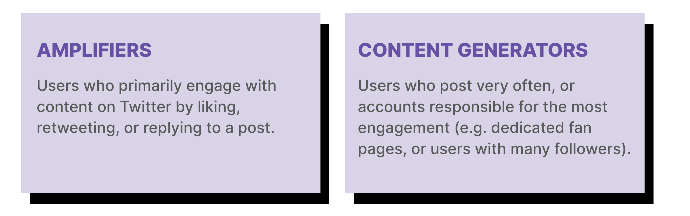

Methods & Analysis
Google Trends
Twitter
To obtain our Twitter data, we used the Python API twint to scrape tweets without the
limitations of the official API, which only allows for scraping up to seven days before
the usage date. We determined “relevant” tweets during the aforementioned time periods
by scraping Twitter for two hashtags per album: the most popular artist hashtag and the
most popular album hashtag. For example, for BTS’s first album Dark & Wild, we scraped all
tweets that contained the “query” hashtags #BTS and #DarkAndWild during the time period.
Using twint, we scraped all the original tweets during the specific album release timeframes.
Here's the summary statistics for our Twitter album data:

By sheer numbers, BTS Twitter fans appear to carry more weight per individual which more than
compensates for their lower overall size throughout the three albums. By the third album,
there are about 1.1 total tweets (including replies) per follower for BTS in that time period,
while Taylor Swift and Justin Bieber average 0.020 and 0.0035 tweets per follower. Though BTS
has a relatively smaller fanbase size as defined by the number of followers, its members are
far and beyond more actively engaging on Twitter.
However, sheer numbers alone do not conclusively indicate collaboration. It is possible that
the original tweets in our dataset could largely be independent individuals tweeting about
their favorite artists/albums. As a specialty of fandom Twitter—not counting artist and public
relations (PR) tweet contributions—there are two main subsets of users: content generators and
amplifiers.

Naturally, content generators make up a very small portion of total Twitter users, but account
for the majority of engagement. With the amount of engagement the content they push out receives,
we consider them a primary driving force behind Twitter collaboration. So, by studying these content
generators, we are better able to study the mechanisms behind collaboration on Twitter, opposed to
just looking at raw numbers and assuming collaboration.
To fairly compare the role and power of content generators across the three artists and
their albums, we normalized each of the albums to compare how the fanbases changed over
the years. Since there is no simple way of classifying content generator users, we chose
to analyze a curve borrowing the concept of the Lorenz Curve to calculate and visualize the
A percentage of these few users (content generators) that account for B percentage of
engagement (likes/retweets/replies). Mathematically:
To apply the Lorenz Curve concept, we looked at original tweets, since content generator
tweets are all original tweets by definition. Visualizing and analyzing curves through
that range allows us to effectively envision what content generator impact looks like.
Wikipedia